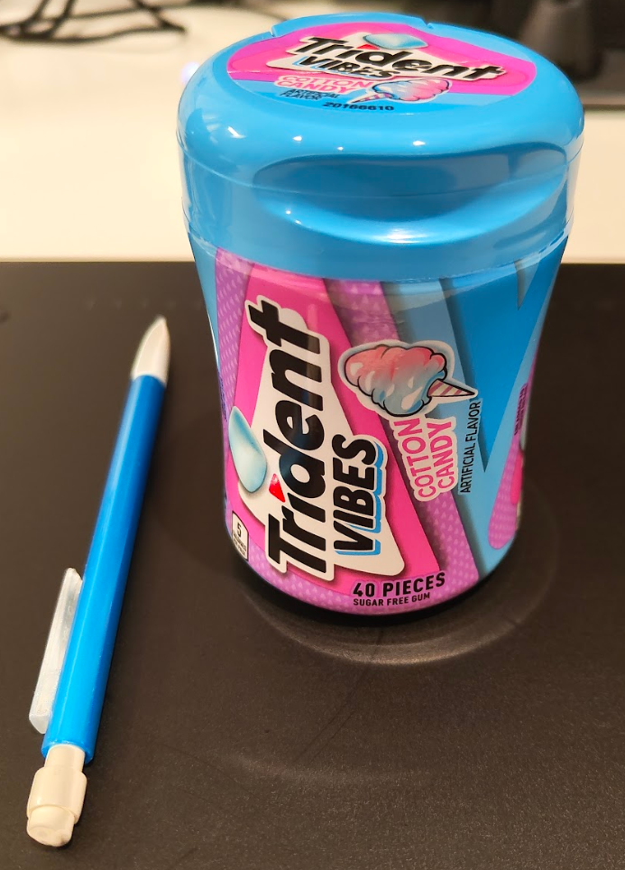
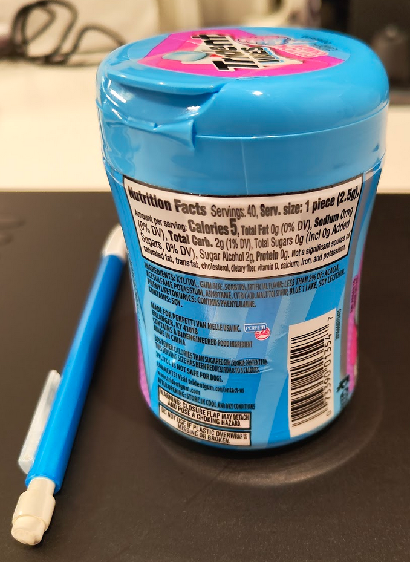
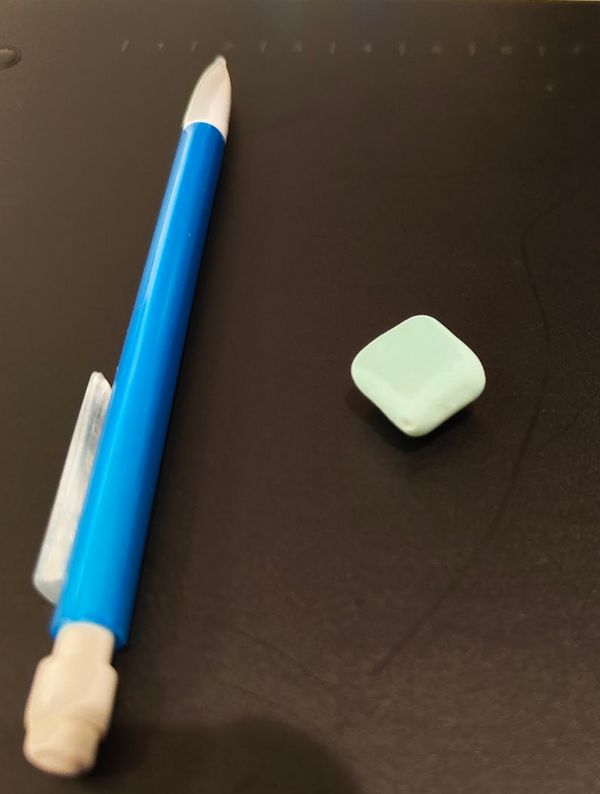

November 15, 2025
When I was in elementary and middle school, chewing gum was a sacred piece of currency traded in a school-wide black market. Debts were paid and collected in the form of gum ("I gave you gum last week -- what were the answers to the homework?"). I'm not innocent when it comes to begging for gum, either -- I was usually one of the first to perk up, sensing the magnetic pull of a stick of Trident and immediately begging for a piece.
My parents rarely had any gum, fearing dental and jaw development issues. As a 10-year-old kid, I would beg for a pack of gum every time we came to the cash register at ShopRite. Now, no longer a 10-year-old, I am free to make choices with my own money!
And so we come to this blog. I will be recording the taste and experience of every single piece of gum I chew starting from Nov. 15, 2025. I've always found comfort and joy in collecting, categorizing, and ranking simple things.
The archive will be organized by company/brand, but this taxonomy is subject to change when I inevitably think of a better method during a long, hot shower.
Trident
Trident gum can be found everywhere across supermarkets and retailers large and small.
| Brand | Product | Flavor | Chew Time (hours) | Rating | Opinions | Images |
|---|---|---|---|---|---|---|
| Trident | Vibes | Cotton Candy | 2-3 | 7/10 | The flavor does have a strong candy taste and is sweet. The main flavor tastes indeed like biting into a large piece of cotton candy. During the first 10-15 minutes of chewing when the flavor is most intense, there is a slightly cooling/minty effect on the tongue. I also taste very slight hints of orange. It is overall pleasant and enjoyable, though the flavor was a little unexpected for me at the start as I very rarely have tried non-fruit or non-mint flavored gums. |
   |